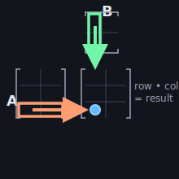
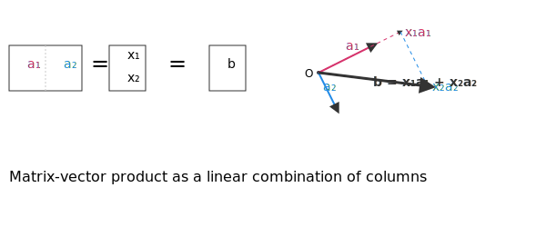

Overview: This lecture establishes the linear algebra foundation required for convex optimization. Beginning with vectors and matrices, we progress through inner products, norms, orthogonality, and projections, building the mathematical toolkit necessary for optimization theory.
Prerequisites: None. This lecture is the starting point.
Forward Connections: Projection techniques introduced here appear in least squares methods (Lecture 01). Positive Semidefinite (PSD) matrices form the basis for convex quadratic programs (Lecture 01). The four fundamental subspaces provide geometric understanding of feasible sets (Lecture 02).
Learning Objectives
After this lecture, you will be able to work with:
Fundamental Objects and Subspaces: Vectors, matrices, the four fundamental subspaces, and the Rank-Nullity Theorem with complete proofs.
Inner Products and Norms: Standard and generalized inner products, the three canonical vector norms, dual norms, Hölder's inequality, and the Cauchy-Schwarz inequality with proofs.
Orthogonality and Projections: Orthonormal bases, Gram-Schmidt process, QR decomposition, projection onto subspaces and affine sets.
Positive Semidefinite Matrices: Definitions, eigenvalue characterization, quadratic forms, ellipsoids, and the Loewner order.
Robust Numerical Methods: Least squares via normal equations, QR, SVD, pseudoinverse, condition numbers, and when to use each method.
Matrix Structures: Trace inner product, Frobenius norm, componentwise order—all prerequisites for later convex set theory.
Identity: $I_n$ has ones on the diagonal; $I_n x = x$.
Standard basis: $e_1, \dots, e_n$ where $e_i$ has a 1 in position $i$, zeros elsewhere. Every $x \in \mathbb{R}^n$ can be written $x = \sum_{i=1}^n x_i e_i$.

Figure 0.1: Matrix multiplication visualized—how rows of the first matrix combine with columns of the second.
Matrix–Vector and Matrix–Matrix Multiplication
$Ax$ is the linear combination of columns of $A$ with coefficients from $x$.
$(AB)_{ij} = \sum_k a_{ik} b_{kj}$.

Figure 0.2: The geometric interpretation of a matrix-vector product as a linear combination of the matrix's column vectors.
Linear Maps
A function $T: \mathbb{R}^n \to \mathbb{R}^m$ is linear if and only if $T(\alpha x + \beta y) = \alpha T(x) + \beta T(y)$. Every linear map can be represented by a matrix $A$ with $T(x) = Ax$.
Componentwise Order Notation
A notation used throughout optimization is the componentwise order. For vectors $x, y \in \mathbb{R}^n$:
$x \ge 0$ means $x_i \ge 0$ for all $i=1, \dots, n$.
$x \le y$ means $x_i \le y_i$ for all $i=1, \dots, n$.
This provides a compact way to describe constraints, such as non-negativity. The vector $\mathbf{1}$ denotes the vector of all ones. This notation is essential for Lecture 02's treatment of polyhedra and cones.
1. Subspaces and the Four Fundamental Spaces
A linear subspace is a set of vectors that is closed under addition and scalar multiplication. Given a matrix $A \in \mathbb{R}^{m \times n}$, we can define four fundamental subspaces that provide deep insights into the behavior of the linear map $T(x) = Ax$.
Column Space (Range): $\mathcal{R}(A) = \{Ax \mid x \in \mathbb{R}^n\} \subseteq \mathbb{R}^m$. This is the set of all possible outputs of the linear map, i.e., the span of the columns of $A$.
Nullspace (Kernel): $\mathcal{N}(A) = \{x \in \mathbb{R}^n \mid Ax = 0\}$. This is the set of all input vectors that are mapped to the zero vector.
Row Space: $\mathcal{R}(A^\top) \subseteq \mathbb{R}^n$. This is the span of the rows of $A$.
Left Nullspace: $\mathcal{N}(A^\top) = \{y \in \mathbb{R}^m \mid A^\top y = 0\}$. This is the nullspace of the transpose of $A$.
These subspaces are linked by two crucial orthogonality relationships:
$\mathcal{R}(A) \perp \mathcal{N}(A^\top)$ in $\mathbb{R}^m$
$\mathcal{R}(A^\top) \perp \mathcal{N}(A)$ in $\mathbb{R}^n$
Figure 1.1: Three planes in 3D space—the intersection represents solution sets of linear equations.
Proof: $\mathcal{R}(A) \perp \mathcal{N}(A^\top)$
If $y \in \mathcal{N}(A^\top)$, then $A^\top y = 0$. For any $x \in \mathbb{R}^n$, we have $Ax \in \mathcal{R}(A)$. The inner product is:
$$ y^\top (Ax) = (A^\top y)^\top x = 0^\top x = 0 $$
Thus every vector in $\mathcal{R}(A)$ is orthogonal to every vector in $\mathcal{N}(A^\top)$.
Rank and Rank–Nullity Theorem
$\mathrm{rank}(A) = \dim \mathcal{R}(A)$. For $A \in \mathbb{R}^{m \times n}$:
$$ \dim \mathcal{N}(A) + \mathrm{rank}(A) = n $$
This fundamental dimension-counting result is a cornerstone of linear algebra.
Proof of the Rank-Nullity Theorem
Step 1: Construct a basis. Let $\dim(\mathcal{N}(A)) = k$ and let $\{v_1, \dots, v_k\}$ be a basis for $\mathcal{N}(A)$. Extend this to a basis for $\mathbb{R}^n$: $\{v_1, \dots, v_k, w_1, \dots, w_{n-k}\}$.
Step 2: Express arbitrary vectors. Any $x \in \mathbb{R}^n$ can be written as $x = \sum_{i=1}^k c_i v_i + \sum_{j=1}^{n-k} d_j w_j$.
Step 3: Apply the matrix. Then
$$ Ax = \sum_{i=1}^k c_i A v_i + \sum_{j=1}^{n-k} d_j A w_j = \sum_{j=1}^{n-k} d_j A w_j $$
since $v_i \in \mathcal{N}(A)$ implies $Av_i = 0$.
Step 4: Show spanning property. The calculation above shows that the vectors $\{Aw_1, \dots, Aw_{n-k}\}$ span $\mathcal{R}(A)$.
Step 5: Verify linear independence. Suppose $\sum_{j=1}^{n-k} d_j A w_j = 0$. Then $A(\sum_{j=1}^{n-k} d_j w_j) = 0$, so $\sum_{j=1}^{n-k} d_j w_j \in \mathcal{N}(A)$. This means it can be written as a linear combination of $\{v_i\}$, which contradicts the linear independence of our basis for $\mathbb{R}^n$ unless all $d_j=0$.
Step 6: Conclude. The set $\{Aw_1, \dots, Aw_{n-k}\}$ is a basis for $\mathcal{R}(A)$, so $\mathrm{rank}(A) = \dim(\mathcal{R}(A)) = n-k = n - \dim(\mathcal{N}(A))$.
Interactive Visualizer: Rank & Nullspace
Define a 2×3 or 3×2 matrix and visualize all four fundamental subspaces. Experiment with rank-deficient matrices to see the Rank-Nullity Theorem in action.
Additional Visualizer: Matrix Explorer
An interactive tool to explore matrix properties including rank, determinant, and fundamental subspaces.
2. Inner Products, Norms, and Angles
Inner Product
An inner product on $\mathbb{R}^n$ is a mapping $\langle x, y \rangle$ that is bilinear, symmetric, and positive definite:
$\langle ax + by, z \rangle = a\langle x, z \rangle + b\langle y, z \rangle$
$\langle x, y \rangle = \langle y, x \rangle$
$\langle x, x \rangle > 0$ for $x \neq 0$
The standard (Euclidean) inner product is the most common example: $\langle x, y \rangle = x^\top y = \sum_{i=1}^n x_i y_i$.
Figure 2.1: The parallelogram law of vector addition, a geometric reflection of the algebraic properties of inner products.
Norms
A norm is a function that assigns a strictly positive length or size to each vector in a vector space, except for the zero vector. A norm $\|\cdot\|$ must satisfy:
Non-negativity: $\|x\| \ge 0$, and $\|x\| = 0$ if and only if $x=0$.
Absolute homogeneity: $\|\alpha x\| = |\alpha| \|x\|$ for any scalar $\alpha$.
Triangle inequality: $\|x+y\| \le \|x\| + \|y\|$.
Three of the most widely used norms are:
$$
\|x\|_2 = \sqrt{\sum_i x_i^2} \quad (\text{Euclidean norm}), \quad \|x\|_1 = \sum_i |x_i| \quad (\text{L1 norm}), \quad \|x\|_\infty = \max_i |x_i| \quad (\text{Infinity norm})
$$
Figure 2.2: The "unit ball" (the set of all vectors with norm less than or equal to 1) for the L1, L2, and infinity norms. The different shapes illustrate how these norms measure distance differently.
Interactive Visualizer: The Geometry of Norms
Explore unit balls for $\ell_1$, $\ell_2$, and $\ell_\infty$ norms. Notice the "pointy" corners of the $\ell_1$ ball—this geometric feature promotes sparsity in optimization.
Cauchy–Schwarz and Triangle Inequality
Proof of Cauchy–Schwarz: $|x^\top y| \le \|x\|_2 \|y\|_2$
Step 1: Consider a norm. For any scalar $t$, the expression $\|x - ty\|_2^2$ is non-negative:
$$ \|x - ty\|_2^2 = (x - ty)^\top(x - ty) = \|x\|_2^2 - 2t(x^\top y) + t^2 \|y\|_2^2 \ge 0 $$
Step 2: Apply the discriminant condition. This quadratic in $t$ is non-negative for all $t$, so its discriminant must be non-positive:
$$ ( -2(x^\top y) )^2 - 4(\|y\|_2^2)(\|x\|_2^2) \le 0 $$
Step 3: Simplify. Rearranging gives
$$ 4(x^\top y)^2 \le 4\|x\|_2^2 \|y\|_2^2 $$
Taking the square root of both sides yields the Cauchy-Schwarz inequality.
Proof of the Triangle Inequality: $\|x+y\|_2 \le \|x\|_2 + \|y\|_2$
Step 1: Expand the squared norm. Starting with the left side:
$$ \|x+y\|_2^2 = (x+y)^\top(x+y) = \|x\|_2^2 + 2x^\top y + \|y\|_2^2 $$
Step 3: Take square roots. Taking the square root of both sides yields the triangle inequality.
Angles and Orthogonality
The Cauchy-Schwarz inequality allows us to define the angle between two vectors:
$$ \cos \angle(x, y) = \frac{x^\top y}{\|x\|_2 \|y\|_2} $$
Since the magnitude of the right-hand side is guaranteed to be between -1 and 1. Two vectors are orthogonal if their inner product is zero, $x^\top y = 0$, which corresponds to a 90-degree angle.
Dual Norms and Hölder's Inequality
The concept of duality is central to optimization. For any norm $\|\cdot\|$, we can define a corresponding dual norm, denoted $\|\cdot\|_*$, as:
$$ \|y\|_* = \sup_{\|x\| \le 1} x^\top y $$
The dual norm measures the maximum "stretch" of a vector $y$ when applied to unit-norm vectors $x$. This definition leads to some important pairings:
The dual of the L2 norm is the L2 norm itself (it is self-dual).
The dual of the L1 norm is the L-infinity norm.
The dual of the L-infinity norm is the L1 norm.
Hölder's Inequality: A Generalization of Cauchy-Schwarz
Hölder's inequality is a direct consequence of the definition of the dual norm and provides a powerful bound on the inner product of two vectors:
$$ |x^\top y| \le \|x\| \cdot \|y\|_* $$
When the norm is the L2 norm, the dual norm is also the L2 norm, and we recover the Cauchy-Schwarz inequality. This inequality is essential for the study of dual cones in Lecture 02 and for duality theory in general.
Generalized (Weighted) Inner Product
If $Q \in \mathbb{R}^{n \times n}$ is symmetric positive definite (SPD), then $\langle x, y \rangle_Q := x^\top Q y$ is an inner product with induced norm $\|x\|_Q = \sqrt{x^\top Q x}$. This yields quadratic forms and ellipsoidal distance.
Matrix Inner Product and Frobenius Norm
For matrices $X, Y \in \mathbb{R}^{m \times n}$, the trace inner product is:
$$ \langle X, Y \rangle = \mathrm{tr}(X^\top Y) = \sum_{ij} X_{ij} Y_{ij} $$
The Frobenius norm is $\|X\|_F = \sqrt{\langle X, X \rangle} = \sqrt{\sum_{ij} X_{ij}^2}$.
The Loewner order for symmetric matrices: $X \succeq Y$ means $X - Y \succeq 0$ (i.e., $v^\top(X - Y)v \ge 0$ for all $v$). This is the backdrop for Lecture 02's PSD cone and its dual.
3. Orthogonality and Orthonormal Bases
Orthonormal Sets
A set of vectors $q_1, \dots, q_k$ is orthonormal if its elements are mutually orthogonal and each has a norm of 1. Formally, $q_i^\top q_j = \delta_{ij}$, where $\delta_{ij}$ is the Kronecker delta (1 if $i=j$, 0 otherwise). A square matrix $Q$ with orthonormal columns is an orthogonal matrix, satisfying the important property $Q^\top Q = I$, which means $Q^{-1} = Q^\top$. Orthonormal bases are computationally desirable because they are numerically stable and simplify many calculations, such as projections.
The Gram–Schmidt Process
The Gram-Schmidt process is an algorithm for constructing an orthonormal basis from a set of linearly independent vectors. Starting with a vector, it iteratively subtracts the components that lie in the direction of the previously processed vectors, leaving a new, orthogonal vector that is then normalized.
$$
\tilde{q}_k = a_k - \sum_{i=1}^{k-1} (q_i^\top a_k) q_i, \quad q_k = \frac{\tilde{q}_k}{\|\tilde{q}_k\|_2}
$$
The QR Decomposition
The QR decomposition expresses a matrix $A$ as the product of an orthonormal matrix $Q$ and an upper triangular matrix $R$. This decomposition is a direct outcome of the Gram-Schmidt process and is a cornerstone of numerical linear algebra. For a matrix $A \in \mathbb{R}^{m \times n}$ with full column rank, we can write $A = QR$, where $Q \in \mathbb{R}^{m \times n}$ has orthonormal columns and $R \in \mathbb{R}^{n \times n}$ is upper-triangular.
Applications:
Solving Linear Systems: The system $Ax=b$ becomes $QRx=b$, which simplifies to $Rx = Q^\top b$. This is easily solved using back substitution and is far more numerically stable than forming the normal equations.
Projections: The projection onto the column space of $A$ is given by $P = QQ^\top$.
Interactive Explorer: Orthogonality & Projections
Drag two vectors in the 2D plane and see their dot product, angle, and orthogonal projection update in real-time.
4. Positive Semidefinite Matrices
Definitions
A symmetric matrix $Q \in \mathbb{S}^n$ is:
Positive Semidefinite (PSD), written $Q \succeq 0$, if the quadratic form $x^\top Q x \ge 0$ for all vectors $x$.
Positive Definite (PD), written $Q \succ 0$, if $x^\top Q x > 0$ for all non-zero vectors $x$.
These matrices are fundamental to convex optimization because they define convex quadratic functions. An equivalent and often more practical characterization is based on their eigenvalues:
A matrix is PSD if and only if all of its eigenvalues are non-negative.
A matrix is PD if and only if all of its eigenvalues are strictly positive.
A positive definite matrix $Q$ can be used to define a generalized norm, $\|x\|_Q = \sqrt{x^\top Q x}$. The unit ball for this norm, $\{x \mid x^\top Q x \le 1\}$, is an ellipsoid, whose geometry is determined by the eigenvalues and eigenvectors of $Q$.
Figure 4.1: Eigenvalues and positive semidefiniteness—the signs determine the matrix's curvature properties.Figure 4.2: Eigenvectors in action—how matrices transform space along principal directions.
Interactive Explorer: Eigenvalues and PSD Matrices
For 2×2 matrices, see geometric interpretation of eigenvalues/eigenvectors and visualize the quadratic form $x^\top Q x$. Modify entries and observe how eigenvalues change. The 3D surface plot shows whether the matrix is PD (convex bowl), ND (concave), or indefinite (saddle).
Advanced Tool: Hessian Landscape Visualizer
Render the 3D surface of a quadratic function and its Hessian matrix, linking eigenvalues to curvature.
5. Projections onto Subspaces and Affine Sets
Orthogonal Projection onto a Subspace
Let $\mathcal{S} \subseteq \mathbb{R}^m$ be a subspace and $b \in \mathbb{R}^m$. The orthogonal projection $p \in \mathcal{S}$ of $b$ is the unique vector in $\mathcal{S}$ minimizing $\|b - p\|_2$. It is characterized by the orthogonality condition:
$$ b - p \perp \mathcal{S} \quad \iff \quad v^\top(b - p) = 0 \ \ \forall v \in \mathcal{S} $$
Projection via a Basis
If $Q \in \mathbb{R}^{m \times k}$ has orthonormal columns spanning $\mathcal{S}$, the projector is:
$$ P = QQ^\top \quad \text{and} \quad p = Pb = QQ^\top b $$
Check: $P^2 = P$ (idempotent) and $P^\top = P$ (symmetric)—that's what makes it an orthogonal projector.
Projection onto $\mathcal{R}(A)$ using $A$
If $A \in \mathbb{R}^{m \times n}$ has full column rank:
$$ P = A(A^\top A)^{-1} A^\top \quad \text{and} \quad p = Pb $$
Projection onto an Affine Set
Projecting onto $\{x \mid Fx = g\}$ reduces to subspace projection by translating:
Pick any $x_0$ with $Fx_0 = g$
Write the affine set as $x_0 + \mathcal{N}(F)$
Project $b - x_0$ onto $\mathcal{N}(F)$ using a basis $Z$ for $\mathcal{N}(F)$
Translate back
6. The Method of Least Squares
The Problem: Overdetermined Systems
Often in practice, we encounter a system of linear equations $Ax=b$ where there is no exact solution because the vector $b$ does not lie in the column space of $A$. This is common when $m > n$ (more equations than unknowns). The goal of least squares is to find the "best" approximate solution by minimizing the squared Euclidean norm of the residual vector $r = Ax-b$:
$$ \min_{x \in \mathbb{R}^n} \|Ax - b\|_2^2 $$
Geometric Interpretation: Projection
The solution to the least squares problem has a clean geometric interpretation. The vector $Ax$ is always in the column space of $A$, $\mathcal{R}(A)$. The problem is therefore equivalent to finding the point in $\mathcal{R}(A)$ that is closest to $b$. This closest point is the orthogonal projection of $b$ onto $\mathcal{R}(A)$. Let this projection be $p = Ax^\star$. The residual vector $r^\star = b - Ax^\star$ must be orthogonal to the entire column space.
The Normal Equations
The orthogonality condition, $r^\star \perp \mathcal{R}(A)$, means that the residual must be orthogonal to every column of $A$. This can be expressed compactly as $A^\top r^\star = 0$. Substituting the definition of the residual, we get:
$$ A^\top(b - Ax^\star) = 0 $$
Rearranging this gives the normal equations:
$$ A^\top A x^\star = A^\top b $$
If the matrix $A$ has linearly independent columns (full column rank), then $A^\top A$ is invertible, and we can write the unique solution as $x^\star = (A^\top A)^{-1} A^\top b$.
Uniqueness of the Solution
If $A$ has full column rank ($\mathrm{rank}(A) = n$), the solution $x^\star$ is unique.
If $A$ is rank-deficient ($\mathrm{rank}(A) < n$), there are infinitely many solutions. In this case, the pseudoinverse is used to find the solution with the minimum norm.
7. Solving Least Squares Robustly: QR, SVD, Pseudoinverse
QR Method (Recommended in Practice)
If $A = QR$ with $Q \in \mathbb{R}^{m \times n}$ ($Q^\top Q = I$) and $R \in \mathbb{R}^{n \times n}$ upper triangular, the least-squares solution solves:
$$ Rx^\star = Q^\top b \quad \text{(back substitution)} $$
This avoids forming $A^\top A$, which squares the condition number and amplifies round-off errors.
$U \in \mathbb{R}^{m \times m}$ and $V \in \mathbb{R}^{n \times n}$ are orthogonal
$\Sigma \in \mathbb{R}^{m \times n}$ is diagonal with nonnegative entries $\sigma_1 \ge \cdots \ge \sigma_r > 0$, $r = \mathrm{rank}(A)$
The SVD provides the most robust method for computing the pseudoinverse of a matrix, denoted $A^+$:
$$ A^+ = V\Sigma^+ U^\top $$
where $\Sigma^+$ is formed by taking the reciprocal of the non-zero singular values and transposing the resulting matrix. The pseudoinverse provides the minimum-norm solution to the least squares problem:
$$ x^\star = A^+ b $$
This solution is numerically stable even when $A$ is rank-deficient or ill-conditioned.
The Condition Number
The condition number of a matrix, $\kappa(A) = \frac{\sigma_{\max}}{\sigma_{\min}}$, measures how sensitive the solution of a linear system is to perturbations in the input data. A large condition number indicates that even small numerical errors can be greatly amplified. The normal equations are particularly susceptible to this, as $\kappa(A^\top A) = \kappa(A)^2$. This is why direct methods like QR and SVD are preferred in practice.
Interactive Demo: SVD for Image Compression
See low-rank approximation in action. Load an image and reconstruct it using varying numbers of singular values. A surprisingly accurate approximation can be achieved with only a small fraction of the singular values.
Advanced Tool: Condition Number Race
Demonstrates how high condition numbers slow down iterative solvers by comparing two systems of linear equations.
Projection Revisited (with SVD)
The projector onto $\mathcal{R}(A)$ is:
$$ P = UU^\top \quad \text{(using only the first $r$ columns of $U$)} \quad \text{or} \quad P = AA^+ $$
Both are symmetric idempotent; both send any $b$ to its closest point in $\mathcal{R}(A)$.
8. Variants You Will Need
(a) Weighted Least Squares (WLS)
Given SPD weight $W \in \mathbb{R}^{m \times m}$:
$$ \min_x \|Ax - b\|_W^2 := (Ax - b)^\top W(Ax - b) $$
Let $C$ satisfy $W = C^\top C$ (e.g., Cholesky). Then the problem is ordinary least squares in the whitened system $(CA)x \approx Cb$. Normal equations: $A^\top W A x = A^\top W b$.
(b) Constrained to an Affine Set
Solve:
$$ \min_x \|Ax - b\|_2^2 \quad \text{s.t.} \quad Fx = g $$
One method: parametrize $x = x_0 + Zy$, where $Fx_0 = g$ and columns of $Z$ form a basis for $\mathcal{N}(F)$. Then minimize $\|A(x_0 + Zy) - b\|_2^2$ over $y$ (an unconstrained LS). QR on $AZ$ is typically best.
9. Worked Examples (Fully Written Out)
Example 1: Projection onto a Line
Let's find the projection of the vector $b = (2, 3)^\top$ onto the line spanned by the vector $u = (1, 1)^\top$. The projection $p$ is given by the formula:
$$ p = \frac{u^\top b}{u^\top u} u = \frac{(1)(2) + (1)(3)}{(1)(1) + (1)(1)} \begin{pmatrix} 1 \\ 1 \end{pmatrix} = \frac{5}{2} \begin{pmatrix} 1 \\ 1 \end{pmatrix} = \begin{pmatrix} 2.5 \\ 2.5 \end{pmatrix} $$
The residual vector is $r = b - p = (2 - 2.5, 3 - 2.5)^\top = (-0.5, 0.5)^\top$. We can verify that the residual is orthogonal to the line: $u^\top r = (1)(-0.5) + (1)(0.5) = 0$.
Example 2: Solving Least Squares with Normal Equations
Let's solve the least squares problem for the system $Ax=b$ with:
$$ A = \begin{pmatrix} 1 & 1 \\ 1 & -1 \\ 1 & 1 \end{pmatrix}, \quad b = \begin{pmatrix} 2 \\ 0 \\ 1 \end{pmatrix} $$
First, we form the normal equations $A^\top A x = A^\top b$:
$$ A^\top A = \begin{pmatrix} 1 & 1 & 1 \\ 1 & -1 & 1 \end{pmatrix} \begin{pmatrix} 1 & 1 \\ 1 & -1 \\ 1 & 1 \end{pmatrix} = \begin{pmatrix} 3 & 1 \\ 1 & 3 \end{pmatrix} $$
$$ A^\top b = \begin{pmatrix} 1 & 1 & 1 \\ 1 & -1 & 1 \end{pmatrix} \begin{pmatrix} 2 \\ 0 \\ 1 \end{pmatrix} = \begin{pmatrix} 3 \\ 3 \end{pmatrix} $$
We solve the system $\begin{pmatrix} 3 & 1 \\ 1 & 3 \end{pmatrix} x = \begin{pmatrix} 3 \\ 3 \end{pmatrix}$, which yields the solution $x^\star = (3/4, 3/4)^\top$.
The projection is $p = Ax^\star = (3/2, 0, 3/2)^\top$, and the residual is $r = b - p = (1/2, 0, -1/2)^\top$. We can verify the orthogonality condition: $A^\top r = (0, 0)^\top$.
Example 3: Rank-Deficient Case
Consider the system with:
$$ A = \begin{pmatrix} 1 & 1 \\ 2 & 2 \end{pmatrix}, \quad b = \begin{pmatrix} 3 \\ 6 \end{pmatrix} $$
The columns of $A$ are linearly dependent, so the system is rank-deficient. The vector $b$ is in the column space of $A$, so there are infinitely many solutions. The normal equations are $A^\top A x = \begin{pmatrix} 5 & 5 \\ 5 & 5 \end{pmatrix} x = \begin{pmatrix} 15 \\ 15 \end{pmatrix}$. This system has infinitely many solutions of the form $x_1 + x_2 = 3$. The pseudoinverse would provide the minimum-norm solution, $x_1 = x_2 = 1.5$.
10. Implementation Mini-Guide (What to Actually Do in Code)
For standard, well-conditioned problems, QR decomposition is the recommended method. It is numerically stable and computationally efficient.
For problems that are ill-conditioned or rank-deficient, the SVD method is the most robust choice. It is also necessary when the minimum-norm solution is required.
Avoid explicitly forming the product $A^\top A$ and solving the normal equations, as this squares the condition number and can lead to a loss of numerical precision.
Before solving, it is often a good practice to preprocess data by centering and scaling features. This can significantly improve the condition number.
Always verify the solution by checking that the residual is orthogonal to the column space: $A^\top(b - Ax^*) \approx 0$.
11. Exercises (with Detailed Solutions)
A. Fundamentals
A1. Prove that the set of all linear combinations of a fixed set of vectors is a subspace.
Solution: Let $S = \mathrm{span}\{v_1, \dots, v_k\}$.
1. Closure under addition: Let $u = \sum c_i v_i$ and $w = \sum d_i v_i$ be in $S$. Then $u+w = \sum (c_i+d_i)v_i$, which is also a linear combination, so $u+w \in S$.
2. Closure under scalar multiplication: Let $u = \sum c_i v_i \in S$ and $\alpha \in \mathbb{R}$. Then $\alpha u = \sum (\alpha c_i)v_i$, which is also a linear combination, so $\alpha u \in S$.
3. Contains zero vector: The zero vector is in $S$ because $0 = \sum 0 \cdot v_i$.
Since $S$ satisfies these three properties, it is a subspace.
A2. Show that $\mathcal{R}(A) \perp \mathcal{N}(A^\top)$.
Solution: Let $v \in \mathcal{R}(A)$ and $y \in \mathcal{N}(A^\top)$. By definition, $v = Ax$ for some vector $x$, and $A^\top y = 0$. We want to show their inner product is zero:
$$ v^\top y = (Ax)^\top y = x^\top A^\top y = x^\top (A^\top y) = x^\top 0 = 0 $$
Since this holds for any $v \in \mathcal{R}(A)$ and $y \in \mathcal{N}(A^\top)$, the subspaces are orthogonal.
A3. Show that $Q^\top Q = I$ implies $\|Qx\|_2 = \|x\|_2$.
Solution: We start with the squared norm:
$$ \|Qx\|_2^2 = (Qx)^\top(Qx) $$
Using the property $(AB)^\top = B^\top A^\top$, this becomes:
$$ \|Qx\|_2^2 = x^\top Q^\top Q x $$
Since we are given that $Q^\top Q = I$, we substitute this in:
$$ \|Qx\|_2^2 = x^\top I x = x^\top x = \|x\|_2^2 $$
Taking the square root of both sides (and since norms are non-negative), we get $\|Qx\|_2 = \|x\|_2$. This shows that orthogonal transformations preserve the Euclidean norm (length) of vectors.
A4. (New) Prove that if a set of vectors $\{v_1, \dots, v_k\}$ is orthogonal, it must be linearly independent.
Solution: Consider the equation $c_1 v_1 + \dots + c_k v_k = 0$. To show linear independence, we must show that all coefficients $c_i$ must be zero.
Take the inner product of both sides with any vector $v_j$ from the set:
$$ \langle v_j, c_1 v_1 + \dots + c_k v_k \rangle = \langle v_j, 0 \rangle = 0 $$
By linearity of the inner product:
$$ c_1 \langle v_j, v_1 \rangle + \dots + c_j \langle v_j, v_j \rangle + \dots + c_k \langle v_j, v_k \rangle = 0 $$
Since the set is orthogonal, $\langle v_j, v_i \rangle = 0$ for $i \neq j$. The equation simplifies to:
$$ c_j \langle v_j, v_j \rangle = c_j \|v_j\|_2^2 = 0 $$
Since the vectors are non-zero, $\|v_j\|_2^2 > 0$, which implies $c_j = 0$. Since this holds for any $j=1, \dots, k$, all coefficients are zero, and the set is linearly independent.
B. Projections
B1. Let $S = \mathrm{span}\{u, v\}$ with $u, v$ independent. Derive the projector $P$ onto $S$.
Solution: Form $A = [u \ v]$. If $A$ has full column rank, $P = A(A^\top A)^{-1}A^\top$.
B2. Show that if $P$ is symmetric and idempotent, then it is an orthogonal projector.
Solution: For any $b$, set $p = Pb$ and $r = b - Pb$. Then $Pr = 0$ (because $P^2 = P$); thus $r \in \mathcal{N}(P)$. For any $y = Pw \in \mathcal{R}(P)$, $y^\top r = w^\top P^\top(b - Pb) = w^\top P(b - Pb) = w^\top(Pb - P^2b) = 0$, so $r \perp \mathcal{R}(P)$. Hence $p$ is the orthogonal projection.
B3. Project $b = (1, 2, 3)^\top$ onto the affine set $\{x \mid [1 \ 1 \ 1]x = 3\}$.
C1. Derive normal equations and prove uniqueness iff $\mathrm{rank}(A) = n$.
Solution: The objective function is $f(x) = \|Ax-b\|_2^2 = x^\top A^\top A x - 2b^\top A x + b^\top b$. This is a quadratic function of $x$. To find the minimum, we take the gradient with respect to $x$ and set it to zero:
$$ \nabla_x f(x) = 2A^\top A x - 2A^\top b = 0 \implies A^\top A x = A^\top b $$
The solution is unique if and only if the matrix $A^\top A$ is invertible. This is true if and only if $A$ has full column rank, i.e., $\mathrm{rank}(A) = n$.
C2. Show that the residual at the LS solution is orthogonal to each column of $A$.
Solution: Columns of $A$ span $\mathcal{R}(A)$. Orthogonality condition $A^\top(b - Ax^\star) = 0$ means $r^\star \perp \mathcal{R}(A)$.
C3. Solve a small overdetermined system by (i) normal equations, (ii) QR, (iii) SVD, and compare answers.
Solution: Pick any $3 \times 2$ with independent columns; show all three methods agree to numerical precision. Discuss time and conditioning.
C4. (New) Show that the projection matrix $P = A(A^\top A)^{-1}A^\top$ is idempotent ($P^2=P$) and symmetric ($P^\top = P$).
Step 2: Achieve equality. Let $j = \arg\max_i |y_i|$. Choose $x = e_j$ (the $j$-th standard basis vector). Then $\|x\|_1 = 1$ and:
$$ x^\top y = y_j = \pm |y_j| = \|y\|_\infty $$
(choosing the sign of $e_j$ to match the sign of $y_j$).
Conclusion: $\|y\|_* = \|y\|_\infty$.
Hölder's Inequality (Dual-Norm Cauchy–Schwarz)
For all $x, y \in \mathbb{R}^n$ and any norm $\|\cdot\|$:
$$
x^\top y \le \|x\| \cdot \|y\|_*
$$
Proof of Hölder's Inequality
Case 1: $x = 0$. The inequality is trivially true: $0 \le 0$.
Case 2: $x \neq 0$. Write:
$$ x^\top y = \|x\| \cdot \frac{x^\top y}{\|x\|} = \|x\| \cdot \left(\frac{x}{\|x\|}\right)^\top y $$
Note that $\left\|\frac{x}{\|x\|}\right\| = 1$, so by the definition of dual norm:
$$ \left(\frac{x}{\|x\|}\right)^\top y \le \sup_{\|z\| \le 1} z^\top y = \|y\|_* $$
Combining: $x^\top y \le \|x\| \cdot \|y\|_*$.
Why We Need This Later
In Lecture 02, when computing dual cones, you will repeatedly use "$y^\top x \le \|y\|_* \|x\|$" with appropriate norms. This inequality is the workhorse of duality theory.
15. Matrix Inner Product, Frobenius Norm, and Loewner Order
Trace and Frobenius Inner Product
For matrices $X, Y \in \mathbb{R}^{m \times n}$, define:
Denote the space of $n \times n$ symmetric matrices by:
$$
\mathbb{S}^n = \{ X \in \mathbb{R}^{n \times n} \mid X = X^\top \}
$$
Loewner Order (Semidefinite Order)
For $X, Y \in \mathbb{S}^n$, we write $X \succeq Y$ if and only if $X - Y$ is positive semidefinite (PSD), meaning:
$$
v^\top (X - Y) v \ge 0 \quad \text{for all } v \in \mathbb{R}^n
$$
Microfacts About the Loewner Order
Eigenvalue characterization: $X \succeq 0$ if and only if all eigenvalues of $X$ are nonnegative.
Inner product property: If $X \succeq 0$ and $Y \succeq 0$, then:
$$ \langle X, Y \rangle = \mathrm{tr}(XY) \ge 0 $$
(This follows because $XY$ has nonnegative trace when both are PSD.)
Partial order: The relation $\succeq$ is reflexive, transitive, and antisymmetric (hence a partial order).
Connection to Optimization
The Loewner order is the language of:
Ellipsoids (defined by PSD matrices in quadratic forms)
PSD cone $\mathbb{S}^n_+ = \{X \in \mathbb{S}^n \mid X \succeq 0\}$ in Lecture 02
Feasible point computation in constrained problems
Active-set methods in quadratic programming
17. Additional Practice Problems (with Solutions)
Problem 1: Dual of $\ell_p$ Norm
Problem: Show that for $1 < p < \infty$, the dual norm of $\|\cdot\|_p$ is $\|\cdot\|_q$ where $\frac{1}{p} + \frac{1}{q} = 1$. Handle the boundary cases $p = 1 \Rightarrow q = \infty$ and $p = \infty \Rightarrow q = 1$.
Problem: Prove that for matrices $X, Y \in \mathbb{R}^{m \times n}$:
$$
|\langle X, Y \rangle| \le \|X\|_F \|Y\|_F
$$
Solution
View matrices as vectors in $\mathbb{R}^{mn}$ by stacking columns. The Frobenius inner product corresponds to the standard Euclidean inner product on $\mathbb{R}^{mn}$, and the Frobenius norm corresponds to the Euclidean norm. Therefore, the standard Cauchy-Schwarz inequality applies directly.
Problem 3: Loewner Order Transitivity
Problem: If $X \succeq Y$ and $Y \succeq Z$ (all in $\mathbb{S}^n$), prove that $X \succeq Z$.
Solution
We have $X - Y \succeq 0$ and $Y - Z \succeq 0$. Therefore:
$$ X - Z = (X - Y) + (Y - Z) $$
Since the sum of two PSD matrices is PSD (each has nonnegative eigenvalues in their respective quadratic forms), we conclude $X - Z \succeq 0$, i.e., $X \succeq Z$.
Problem 4: Projection onto Affine Set Example
Problem: Find the Euclidean projection of $y = (1, 2, 3)^\top$ onto the affine set: